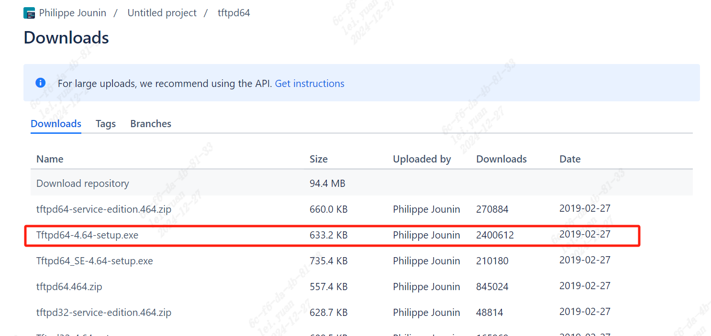
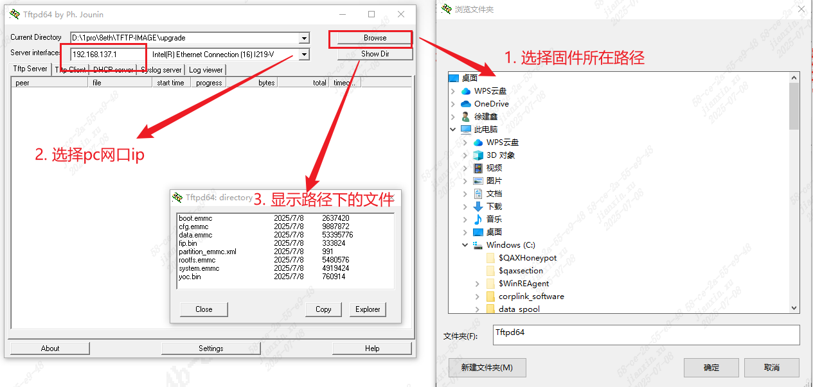

5.1. Use TFTP to load firmware to DDR¶
5.1.1. Preparation Before Use¶
under tftpHost ComputerSoftware:
{kind=link}

tftpd64 Tools followingConfiguration:
setting , TFTP inofReduce ‘//’ in file path。

Firmware
If UseSource Code BuildofFirmware，“sdk/install/soc_ ” Pathunder isupgrade.zipof andrawimagesofFile 。as followsFigure ：


5.SettingsTFTP Software
will totftpunder the directory，or UseHost ComputerSoftware“Browse” toFirmwarePath，Pathnot in and etc. 。
ClickPC serverof“Show Dir” ，Can beforePathunderofFile。
Server interfacesSettingsisLocal HostofNetworkInterface，for example192.168.137.1；
{kind=link}

ConfigurationPCand in Network Segment
Through PC Ethernet Portand LAN
ConfigurationPC ipis192.168.137.1
Configuration ipis192.168.137.11
ThroughinubootCommand Lineunder followingCommands Settings ip，Executesaveenv Settings：
1 setenv ipaddr 192.168.137.11
2 setenv gatewayip 192.168.137.1
3 setenv serverip 192.168.137.1
4 ...
ipaddr IP，serverip tftp server inPCofIP，gatewayip GatewayAddress。
Tests - inubootunder ping PC ipAddress，underFigureIndicatesCan Communication
1 ping 192.168.137.1

5.1.2. TFTPLoad Firmware¶
fromtftp under Fileto MemoryAddress
tftpunder Firmwareof ， under toDDRMemoryin，is toubootofMemory ，Canfrom0x82000000 Write。
1 # withemmc for exampleunder
2 # Load Firmwarebeforewillddr 0
3 mw.b 0x82000000 0 0x2000000
4 # LoadFiletoDDR，
5 # CanLoadFileto ，andRefer tounder DDR FileWriteFlash， after Operationunder File
6 # CanLoadtoDDRnot ，andRefer tounder DDR FileWriteFlash，PleaseNotenot Memory
7 tftpboot 0x82000000 fip.bin
8 # bootetc.FileNeed toUserawimagesunderofFile
9 tftpboot 0x82100000 yoc.bin
10 tftpboot 0x82280000 boot.emmc
11 tftpboot 0x82580000 rootfs.emmc
12 tftpboot 0x82d80000 cfg.emmc
13 tftpboot 0x83780000 system.emmc
IfUseUpgrade inofFirmware Need toDeleteFirmwareofbefore128Bytes (boot.emmcandrootfs.emmc ， rootfs.emmc 128Bytes ， 16M 64Bytesof )
UserawimagesFile inofFirmware not Delete